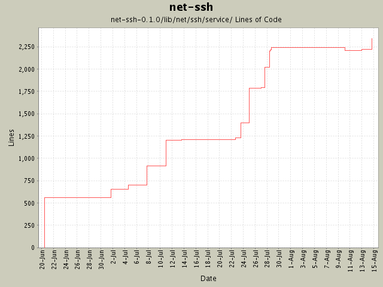

Summary Period: 2004-06-20 to 2004-08-14
[root]/net-ssh-0.1.0/lib/net/ssh/service

Total Lines Of Code:
2342 (2005-01-07 15:12)
| Author | Changes | Lines of Code | Lines per Change |
|---|---|---|---|
| minam | 48 (100.0%) | 2614 (100.0%) | 54.4 |
Support for hostbased authenticaton.
129 lines of code changed in:
HTTP proxy now supports basic authorization (thanks, Jochen!).
11 lines of code changed in:
local forwarding no longer accepts a block. The whole "discriminator" concept
was flawed (at least as it was currently implemented)--just try connecting to
a POP3 server over a forwarded port to see what I mean.
11 lines of code changed in:
Changed buffer implementation and refactored it to a new module. Added
support for tunneling via HTTP proxy.
34 lines of code changed in:
Added Daniel Hobe's suggestion of user-specified authentication methods. Also
bumped the version to 0.0.5.
53 lines of code changed in:
Updated README and TODO. Added rb-keygen to gemspec file. Fixed typo in
userauth.rb.
1 lines of code changed in:
Added "send_extended_data" method to Channel.
12 lines of code changed in:
The UserKeyManager now encapsulates access to a user's private keys. Private
keys are now loaded "on-demand", instead of up-front; this should prevent
being prompted for passphrases for keys that will never actually be used.
216 lines of code changed in:
Added ssh-agent support, and added a #version property to both Net::SSH
and Net::SSH::Transport::Session.
236 lines of code changed in:
Process was missing a puts method.
5 lines of code changed in:
Changed forward_local so that first parameter may be either the port or
(optionally) the address to bind to. Also made 127.0.0.1 the default bind
address instead of 0.0.0.0 (for security reasons).
10 lines of code changed in:
First pass at creating SSH-specific exception classes, as recommended by
Daniel Hobe.
20 lines of code changed in:
Support for interactively executing processes on a remote machine.
380 lines of code changed in:
Fixed problem with bad window-size/packet-size on earlier versions of
OpenSSH servers (verified with 3.1p1). Also added interim support for
interactive sessions.
188 lines of code changed in:
Added a logging infrastructure to aid in troubleshooting.
13 lines of code changed in:
As per the spec, channels now send a "close" after recieving an exit-status
channel request.
2 lines of code changed in:
Forwarding from a local port now accepts an optional bind address as the
second parameter. Cancelling a local port forward now only requires the
port being forwarded (and optionally the bind address).
19 lines of code changed in:
DSA private keys were failing when trying to sign data.
1 lines of code changed in:
Remote-to-local forwarding supported. Forwarding now uses a handler object
instead of a single callback, for better callback type granularity.
340 lines of code changed in:
Changed bind address from localhost to 0.0.0.0
2 lines of code changed in:
(4 more)
Generated by StatCVS 0.2.3